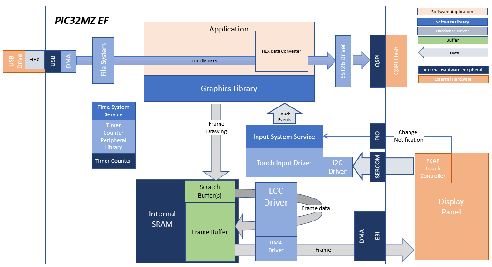
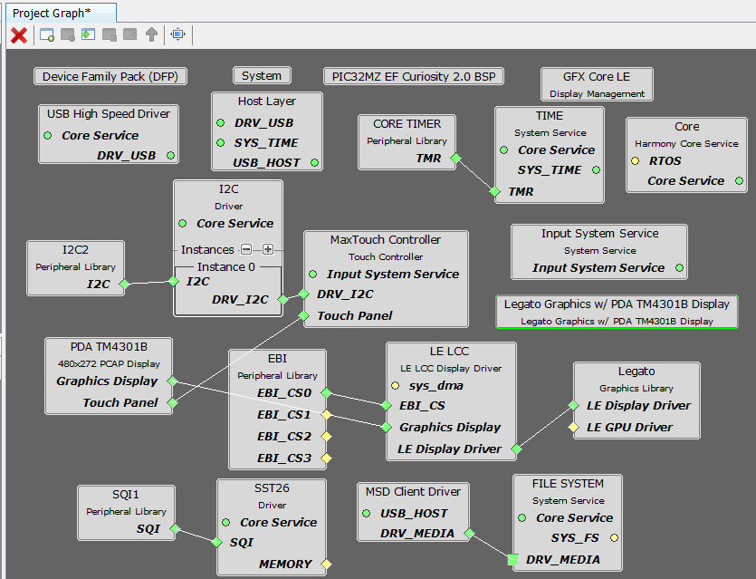

|
MPLAB® Harmony Graphics Suite
|
|
MPLAB® Harmony Graphics Suite
|

The legato_flash application uses the USB file systems in MPLAB Harmony and the USB driver to scan the MSD for a .hex file with resources and reads them sector by sector and programs the external non-volatile SQI memory. The Graphics Library is used to render graphics to the display. Using the DMA, the Low-Cost Controllerless (LCC) Display Driver continuously transfers frame data from the frame buffer out to the LCD display.
The application also features user touch input through the integrated touch screen on the display panel. Touch input from the touch controller goes through the I2C port, and the Input System Service acquires the touch input information from the Touch and I2C drivers. The Input System Service sends touch events to the Graphics Library, which processes these events and updates the frame data accordingly.
This configuration runs on the PIC32MZ EF Curiosity 2.0 with RGB565 GFX Interface board and WQVGA display. A 16-bit RGB565 frame buffer is stored in the internal SRAM, and the Low Cost Controller-less (LCC) display driver is used to manage the DMA that transfers the framebuffer contents to the display via the EBI peripheral.
User touch input on the display panel is received thru the PCAP capacitive touch controller, which sends a notification to the Touch Input Driver. The Touch Input Driver reads the touch information over I2C and sends the touch event to the Graphics Library thru the Input System Service.
The USB peripheral is setup in MSD Host mode with the File System service support. It scans for a file named SQI.hex when a USB MSD device is connected. The application reads the hex data from the file and decodes it with a hex decoder into binary data. The binary is written to external non-volatile memory via the QSPI peripheral configured with the SST26 driver.

The Project Graph diagram shows the Harmony components that are included in this application. Lines between components are drawn to satisfy components that depend on a capability that another component provides.
Adding the PIC32MZ EF Curiosity 2.0 BSP and Legato Graphics w/ PDA TM4301B Display Graphics Template component into the project graph will automatically add the components needed for a graphics project and resolve their dependencies. It will also configure the pins needed to drive the external peripherals like the display and the touch controller.
Disable VBUS function for USB High Speed Driver

For SPI Flash access, make sure all 6 pins for QSPI is mapped.

To drive the USB peripheral, make sure UPLL is enabled with the 40x multiplier, with USB FS Clock output 48 MHz.

The parent directory for this application is gfx/apps/legato_flash. To build this application, use MPLAB X IDE to open the gfx/apps/legato_flash/firmware/legato_fl_mzef_cu_tm4301b.X project file.
The following table lists configuration properties:
| Project Name | BSP Used | Graphics Template Used | Description |
|---|---|---|---|
| legato_fl_mzef_cu_tm4301b.X | PIC32MZ EF Curiosity 2.0 | Legato Graphics w/ PDA TM4301B Display | PIC32 MZ EF Curiosity 2.0 with maXTouch Curiosity Pro Display |
**_NOTE:_** This application may contain custom code that is marked by the comments // START OF CUSTOM CODE ... and // END OF CUSTOM CODE. When using the MPLAB Harmony Configurator to regenerate the application code, use the "ALL" merging strategy and do not remove or replace the custom code.
PIC32MZ EF Curiosity 2.0 with the 4.3” WQVGA PCAP Touch Display Configure the hardware as follows:
The final hardware setup should be:

When power-on is successful, without a USB MSD device or SD MMC device attached to the Target USB port the demonstration will display a screen with the message No valid storage mediums found. Please insert a USB device or SD Card:

If a valid USB MSD device is connected, the display will a USB button. LED1 (red) will light up also.
If a valid SDMMC device is connected, the display will a SD button. LED2 (yellow) will light up also.

Make sure the USB MSD device or the SD MMC device has FAT32 file system format and a valid external resources file named precisely SQI.hex is copied inside.
Press and release the SD button or the USB button on-screen. The application will initiate the data transfer on release of the button. Depending on the size of SQI.hex file (greater than 500 kilobytes), the application may freeze with no visual feedback, upwards of 30 seconds. It will then display a progress bar to indicate the transfer. The transfer completes when the progress bar is filled. The application will then display a button with OK.

 1.8.18
1.8.18